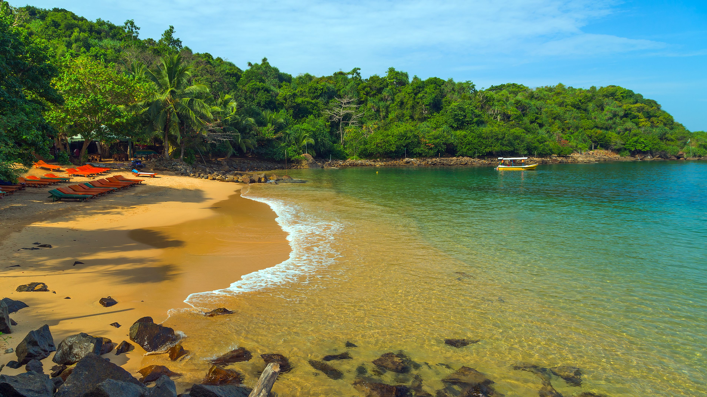

| Home | Tourism Statistics | About Us | Contact Us | Transport Methods |
|---|
|
Hikkaduwa Beach The beaches in Hikkaduwa have been attracting tourists since the 1960s when it was first discovered. The beach stretches on spanning over kilometers and hosts many fun activities to keep the tourists engaged. These water sports include snorkeling and scuba diving for the adventure seekers. The clear waters beckon the nature lovers who wish to take a dip inside the waters to witness the vibrant, colorful aquatic life. The coral sanctuary hosts gorgeous coral formations, which house a variety of fishes and large turtles. The islets along the beach breed pockets of wildlife and are a wonderful way to interact with it. |
Marble Beach In Marble Beach you can find extensive variety of exercises, for example, swimming – the ideal method to find the miracles of the Indian Ocean and a favored action of guests to Trincomalee. There is additionally a shoreline volleyball court for the lively visitor.You will discover Marble Beach, the ideal base for your East Coast stay, with its mind blowing characteristic excellence, remedial peace, energizing exercises and liberal culinary encounters. |
 Jungle Beach This place has Golden sandy shore and rich bio diversity backgrounds and suitable for swimming without waves. The beach is rich with coral reefs and marine biology. Rumassala mountain is closer to jungle beach. Rumassala is famous for tourist and naturalists because jungle beach filled with many uncommon birds, animals, plants, as well as this place famous for rare medicinal plants. According to Ramayana legend the Rumassala Rock is part of the Himalayan range that was brought by "Hanuman" to heal the wounded battalions in order to obey the request of King Rama, The beach is located about 7.5 km from the main city, Galle. and a few kilometers from Rumassala. reached by a climb up Rumassala mountain and then by trekking down through greenery through a small route which leads to beach. The beach is small and secluded Snorkeling is also a great thing to do this area, you should take snorkeling equipment. |